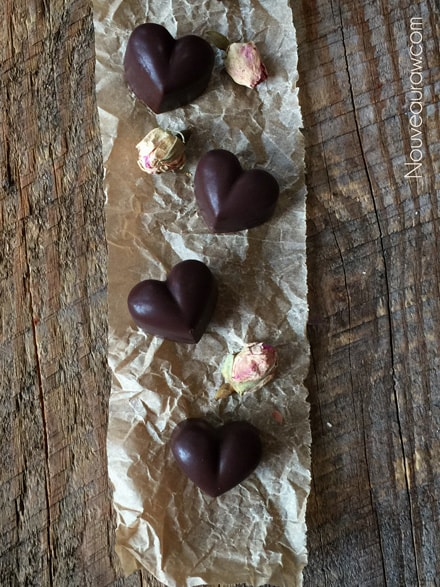
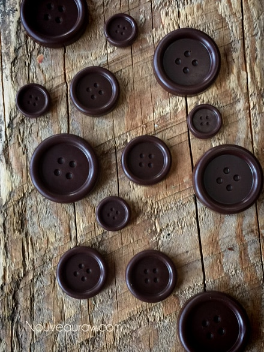
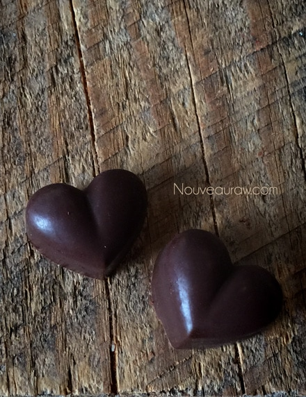

Chocolate Candies

~ raw, vegan, gluten-free, nut-free ~
There is something very gratifying in making your own chocolate candies. Chocolate that is so decadent, rich, and creamy. Not only are they heavenly to eat, but they make amazing gifts for those you cherish.
These days you can find candy molds to fit every occasion, every hobby, every interest, they literally come in about every shape, and size one can imagine. So not only do you give a “sweet labor of love” when you present someone with these homemade chocolates, you can personalize them! This recipe makes a very dark and rich tasting chocolate. Have fun!
When it comes to molds, you are only limited by your own creativity. What I mean is that you can use just about anything for a mold.
If you don’t have any chocolate molds but can’t wait to get started, you can use a lot of common kitchen items as molds. For example; ice cube trays, food containers, bowls, muffin tins, etc. Just keep in mind that any dents or impressions will be imparted on the chocolates. Also, keep away from any type of container that has been used to store pungent foods such as onions and garlic. Let’s get started…
Mise en place
Said real fast, it may seem as though I sneezed. Though I greatly appreciate the “blessing”, this is a term that I want you to become familiar with. You won’t only be using it when making chocolate; you would greatly benefit by making this part of your culinary experience in the kitchen. Never heard of Mise en place? It simply means “putting in place,” as in “set up” or “everything in place.” Bottom line… be prepared!
Start by tidying up the kitchen. Don’t start with a sink full of dishes and “stuff” all over the counter tops. It also means to pull all the ingredients needed for the recipe out, making sure you have everything… once you start making chocolate, you really can’t stop mid-stream and run to the grocery store. Once the space is clean, all ingredients are present… measure them out. Now you are ready to get started.
Raw Cacao Butter
Do not add the cacao butter into the blender in large chunks. This will only create more work on your end and will be taxing on the blender. Grate the butter into small bits. Click (here) to learn a quick and simple way. After grating the butter come back here… don’t melt the butter. I am very picky about the raw cacao butter that I use… the best quality will give you the best results. If you already don’t have a favorite that you work with, click (here) for the brand that I use. The same goes for the raw cacao powder.
- 1 cup (88 g) grated raw cacao butter, melted
- 1/2 cup (60 g) raw cacao powder
- 1/16 tsp Himalayan pink salt
- 2 Tbsp maple syrup (or you can use 1 Tbsp lucuma powder & 1 Tbsp maple syrup)
- 1 tsp vanilla extract
Preparation:
Ensure all utensils, and the bowl is dry before the ingredients are added as water can cause the mix to separate.
- Click (here) to learn how to grate and melt the cacao butter.
- In the meantime, sift the cacao powder (lucuma powder, if used) and salt together.
- It is important to work all the lumps out before adding the cacao butter.
- The unsifted powder will result in a lumpy/grainy chocolate.
- Once the cacao butter is melted completely, drizzle the cacao butter and agave into the bowl with the powder until thoroughly combined.
- Pour the chocolate into your molds. Gently tap the mold to release any bubbles.
- Place in the fridge until firm.
- To remove the chocolates just turn your mold upside down and lightly tap it on the countertop.
- Store chocolates in an airtight glass container in the fridge.
- To wash your molds just use hot water, don’t use soap as this can build up in your molds and effect your chocolates.



© AmieSue.com